When I was born in 1989, the CO2 concentration in the atmosphere was 350 parts per million. 350 parts per million is also considered the safe upper limit for atmospheric CO2, giving rise to the climate group 350.org, which was founded in 2007. Today atmospheric CO2 is around 407 ppm. In 2007 it was about 380 ppm. When my parents were born, it was less than 315 ppm. You can read more numbers like this here.
1989 is also the year a "1.5/10" board game called Dudley Dodos was published. As recognised by BoardGameGeek reviewers, the game is essentially an "eco-friendly" trivial pursuit knockoff. I don't know how old I was or how often we played this game when I was a child, but it's lodged in my memory alongside The Animals of Farthing Wood and stacks of National Geographic magazines, filed under "reasons I ended up like this".
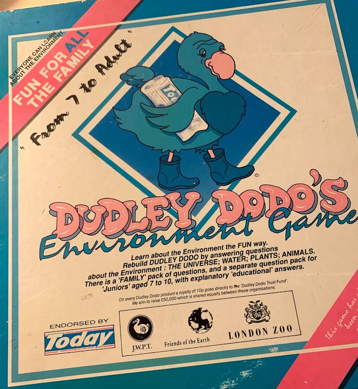
I was lucky to be in Dublin over Christmas this year and cracked open the box (my parents still have it, of course). The gameplay consists of answering environment-themed trivia questions and moving around a board, presumably for some end goal I no longer remember.
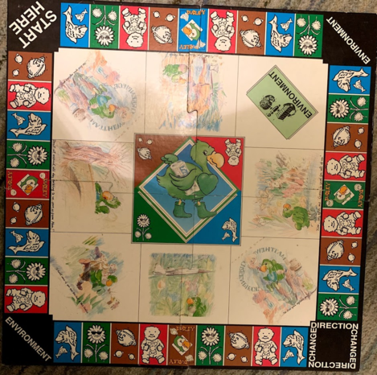
It has a Monopoly-esque mechanic of giving you random cards when you land on certain spaces. In Monopoly these cards say things like "Go back three spaces" or "You have won second prize in a beauty contest, collect $10". In Dudley Dodos they're called "environment" cards, and they're a little different. In this post I'm going to go through them all. Let's start with the nice ones.
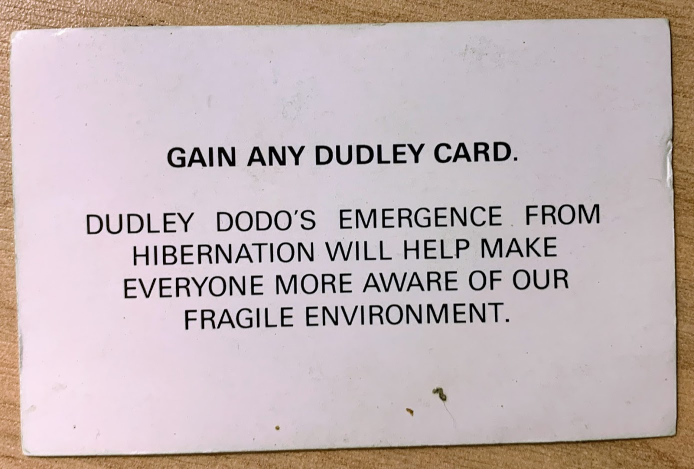
The protagonist of the game is the eponymous Dudley Dodo, a dodo who has evidently emerged from hibernation to help make everyone more aware of our fragile environment. He wears cute boots and has a big heart on his chest.
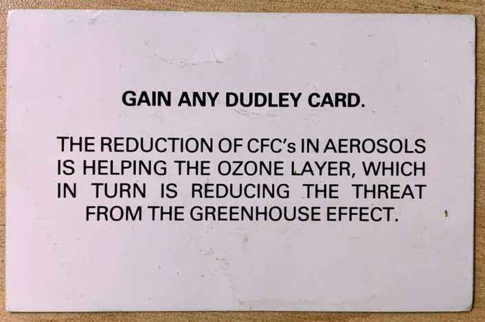
The ban on CFCs was introduced by an international 1987 treaty called the Montreal Protocol, which came into force shortly before I was born. Incredibly, the treaty was brought into effect a mere ~14 years after CFCs were first discovered to be harmful to the ozone layer, and 2 years after a hole in the ozone layer was discovered over Antarctica. Today in 2021, the hole is still here, however its size has stabilised in the last 20 years or so, and there is evidence it is beginning to recover. You can look at it here.
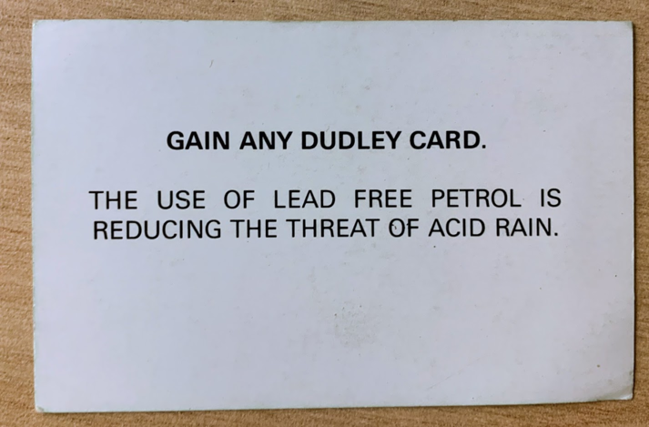
and
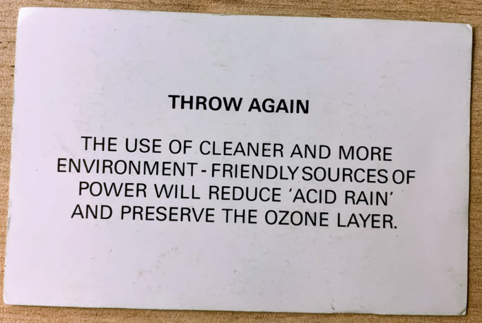
Holes in the ozone layer, acid rain! It certainly feels like environmentalist discourse has moved on since 1989. I guess there was that mention of the greenhouse effect on the previous card, but that's probably not going to come up again.
Acid rain is one of those things I remember hearing about as a child (I wonder where from), and which doesn't get mentioned very often any more. I'm not the only one who's confused by this. According to this guy, acid rain was basically caused by emissions from coal-fired power stations. Since there are now zerofour coal-fired power stations in the UK, I guess it's just not a problem any more. To be more specific, in 1989 the UK was generating 67 Mtoe (Mtoe = millions of tonnes of oil equivalent) of energy from coal, whereas in 2017 it was 10.1 Mtoe and is presumably only going down. At least if there's one thing we can all agree on in 2021, it's that coal is on the way out. What's that, the UK government is building a new coal mine in Cumbria?
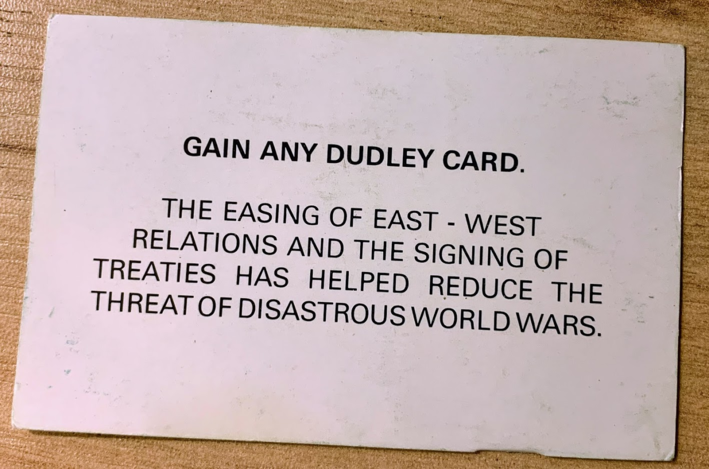
Love the cold war energy off this one. Beyond being an affront to humanity, the machinery of war contributes to the climate crisis and is terrible for the environment.
"The U.S. Department of Defense has a larger annual carbon footprint than most countries on earth. With a sprawling network of bases and logistics networks, the U.S. military is the single biggest emitter of carbon dioxide in the world aside from whole nation-states themselves." Murtaza Hussain citing Neta Crawford.
I don't know if the level of ambient warfare has decreased since 1989, but we seem to have avoided having any more world wars.
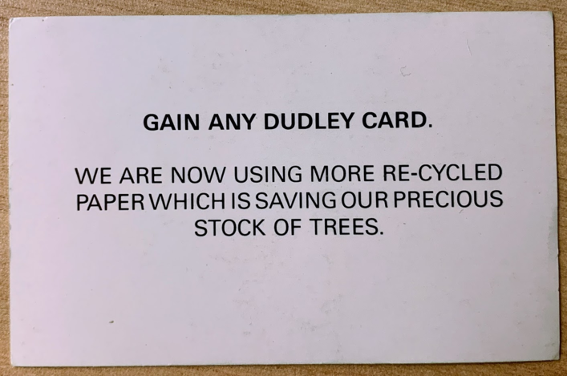
Okay, so we might still be losing forests but the rate of deforestation has decreased since 1990, and legally protected areas have been created, which currently shelter 18% of the world's forest area. The game comes across as a bit naive here - the biggest cause of permanent deforestation isn't our lust for fresh paper - it's the conversion of forest land to something else, like agricultural monoculture (beef, palm oil, soy). If you're reading my blog you probably already know this, but just to be extra clear - most soy is grown to feed animals, not humans. Leave me and my beer-battered tofish and chips alone. Speaking of fish...
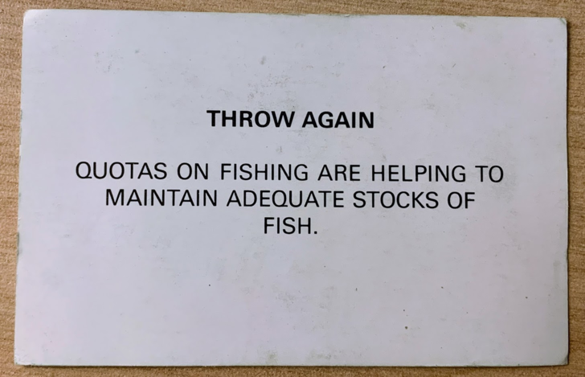
In 1989, an estimated 86.9 million tons of fish were captured from the wild. Apparently yields have been declining ever since, and things basically look fucked - although if you want nuanced details, you could read this UNFAO report into sustainable fishing. On the upside, humpback whales have returned to South Georgia after losing over 90% of their population to commercial whaling in the 20th century.
{kind=link}
A lot of people in the world depend on the sea for their protein... do you?
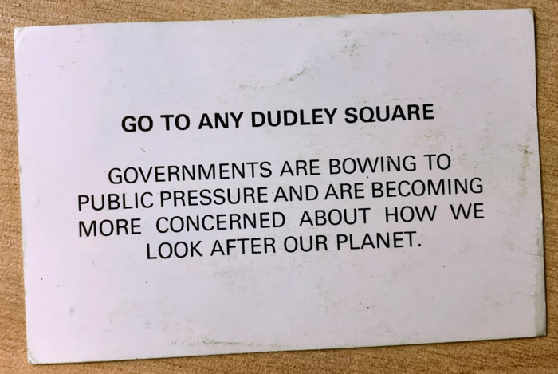
hahahahahaha next
Okay but seriously, the UN Framework Convention on Climate Change came into being in 1992 with its inaugural summit in Rio. In 1997 they created the Kyoto protocol which legally bound signing countries to reduce their greenhouse gas emissions. The US didn't participate in this because they are big babies (except that real babies would support climate action as a matter of survival). My subjective assessment is that governments have been making lots of claims in recent years ("net zero by 2050", "petrol car sales ban by 2030", "leopards will eat some faces, but not yours"). According to the Climate Action Tracker, current pledges put us somewhere near 2.1 to 2.6 degrees of warming by 2100, while current policies put us closer to 2.9C. It's too bad we won't live. But then again, who does?
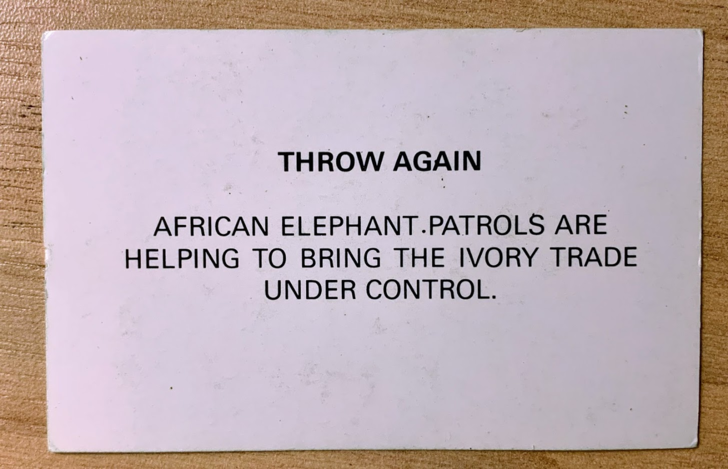
An international ban on the trade of ivory came into force in 1989, after an exposé into the trade and the poaching of African elephants. The topic is more complicated than "ivory bad, therefore must be banned" - arguments have been made that legal, controlled ivory trade can be used to support elephant conservation efforts, and existing bans are undermined by ongoing illegal trade and (seemingly) widespread poaching. Unfortunately, from what I can gather the African elephant remains in decline. When the CITES ban came into effect in 1989, the population of African elephants was no more than 600,000 (down from twice that in 1979), and in 2016 it was estimated at 352,000.
On the upside, if elephants go extinct it brings us (humans) one step closer to being the largest, most important animal. Whales: we haven't forgotten you.
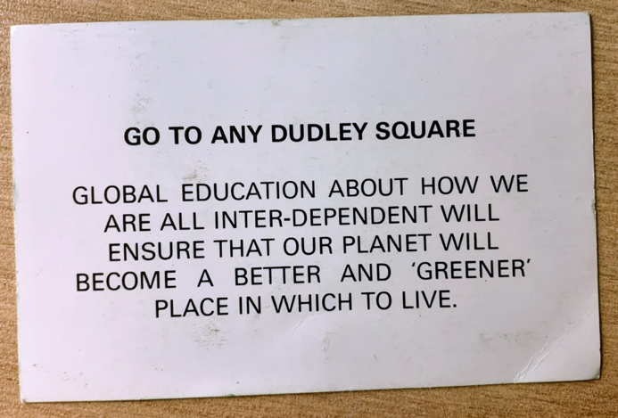 When this game came out, the internet was functionally nonexistant. Social media wasn't even a distant nightmare. I grew up alongside the internet (I have been online for over two decades now, and I will never log off), so it's hard for me to even think of a non-internet world. I take it for granted that I can have friends in different countries, that I can learn about things happening around the world in near-real-time, and access information on essentially any topic.
I don't think this is sufficient for a proper internalisation of "interdependence", however. Late-capitalist society effectively separates us from knowing about other people and countries. Modern supply chains for goods are complex and opaque. You may be able to learn where something you're purchasing came from, but this knowledge is not designed into the system. Intermittent scandals about slave labour, child labour, label fraud, and sweatshops operating countries they're not expected in underscore the reality that many people don't know much about how the things they own were produced. These details are not considered important to know.
Properly understanding the extent to which we are all interdependent requires more than being passively exposed to the internet at large. It necessitates (I think) more fundamental shifts in the emphasis of society. I don't know exactly what these would be, and I do not want to be misunderstood as having a romanticised version of a simpler past to which return is possible or desirable. But I do know that I want something that's better than this. So I choose to believe that the optimism of the game designers was well-placed, even if we haven't achieved ecotopia yet.
We have now come to the end of the positive cards. Many of the themes covered by the positive cards are also covered by the negative cards. I was going to write something snarky about this, but instead I quietly contemplated how often "wins" are really just avoided harms (less killing, less acid rain, more promises to avoid doing bad things). Is environmentalism a fundamentally conservative ideology? The answer, you may be surprised to hear, is "what does 'conservative' even mean? Let's agree on semantics before we have a discussion."
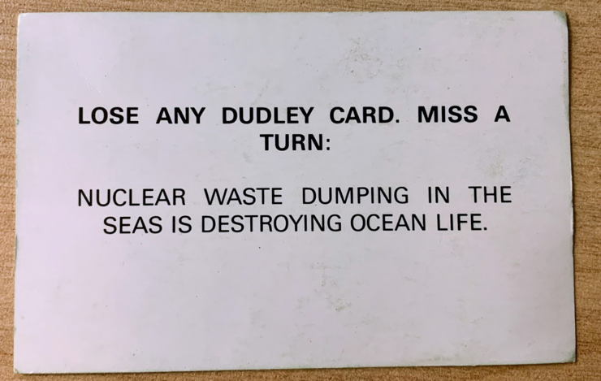
As far as I can tell, dumping nuclear waste in the sea has been banned since 1993 (or maybe earlier, or later) by the London Convention (or maybe Protocol). More confusingly, the environmental impacts of nuclear waste dumping seem to be not very clear and hard to measure. This is like the time (summer 2019) I wanted to learn about the impact of Chernobyl (original event, not 2019 HBO show) and found it killed between 60 and 60,000 people depending on methodology. This is not surprising given radiation has somewhat diffuse effects and causal inference is hard in general. Adding the literal diffusion of radioactive material in the ocean no doubt compounds the issue. In the absence of glowing barrels washing up on beaches to be picked over by three-eyed sea birds, I'm taking this one as a win! Thanks Dudley, you made us aware of our fragile environment.
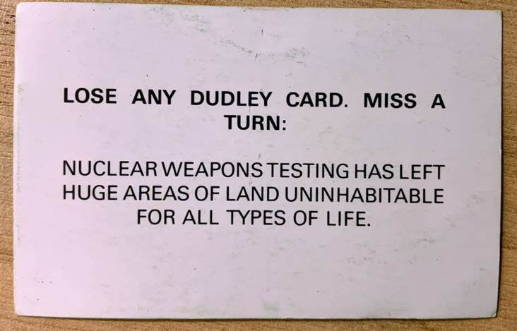
As per the above, determining the direct impacts of nuclear fallout is challenging, but we can look at some examples.
Bikini Atoll is an atoll (a ring-shaped coral reef) in the Marshall Islands that was used extensively for nuclear weapon testing by the US between 1946 and 1958. A 2008 study (Richards et al., Marine Pollution Bulletin) indicates that about 70% of previously-observed coral species can still be counted at the site:
"The case of Bikini Atoll demonstrates that coral reef communities can recover from and exhibit resilience to major disturbance events. In this situation, the visible impact and recovery of the reefs from the anthropogenic impact of atomic testing can be compared to those following natural disturbance events such as cyclone/hurricane damage. Bikini Atoll’s reefs undoubtedly benefited from the post-testing absence of human disturbance, the presence of uninhabited and non-impacted neighbouring atolls,and a supportive prevailing hydrodynamic regime for larval import"
The Semipalatinsk Test Site, aka "The Polygon", is a (shockingly large) region in Kazakhstan that the Soviet Union used for its nuclear weapons testing. Overground testing ended in 1963, with underground testing continuing until 1989. Overall about 400 Hiroshima's worth of nuclear weapons were tested at the site, with seemingly little regard for human health. Here is a Nature news feature on the health impacts on people living in the area. The USSR set up a nondescript medical centre in the region for monitoring radiation exposure, the data from which now serve as a valuable resource for understanding the impact of long-term low-dose radiation exposure on people, as well as their children. Here are some photographs.
As an interesting aside, the US also tested some nuclear weapons at the Semipalatinsk Test Site in the 90s, for the purpose of calibrating instruments for detecting nuclear weapons tests. I can feel myself sliding into a tangent about nuclear weapons and I am going to claw back to the matter at hand: unrelentingly depressing environmentalism.
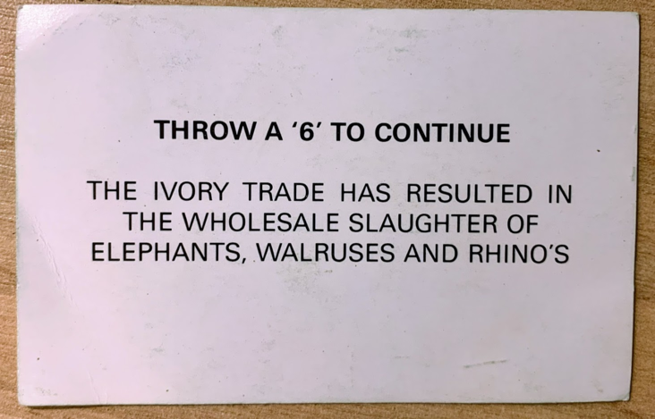
There are five species of rhino. According to the WWF, there are "over 20,000" white rhinos left (although, if you consider just the northern white rhino sub-species there are exactly 2 individuals remaining from that species), around 5000 black rhinos, "more than 3,500" greater one-horned rhinos, around 80 Sumatran rhinos, and around 60 Javan rhinos. That's it for the rhino count. They mostly live in reserves or zoos because people are obsessed with killing them for their horns. It's not uncommon, to want to kill animals for their body parts. But "hunting to extinction" seems like a bad business strategy.
On the upside, walruses don't appear to be at any immediate risk of extinction due to poaching.
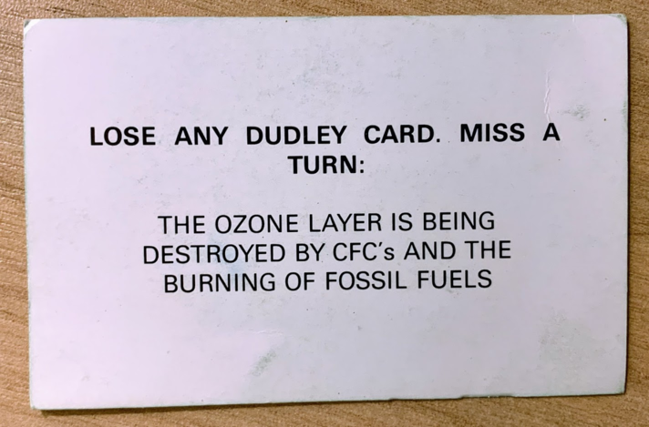
(see above) Not any more, mostly!
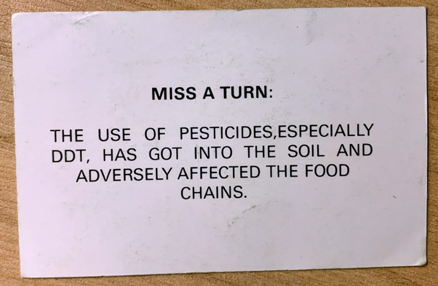
DDT is one of those environmentalist things I hear mentioned a lot but don't specifically know much about, similar to glyphosate (except for this incredible video where Patrick Moore claims it's safe to drink before immediately refusing to drink it). DDT is an insecticide and a "persistent organic pollutant" (e.g. it does not degrade in the environment and will accumulate in organisms). This bioaccumulation makes it particularly nasty to apex predators, and apparently it was responsible for the near-extinction of the bald eagle in the USA. Its insecticidal powers makes it incredibly potent against malaria and typhus (both of which are spread by insects), and was seemingly used quite effectively to reduce or eradicate malaria in the US and parts of Europe.
DDT is famous I think in large part due to the seminal environmentalist book "Silent Spring" by Rachel Carson. I haven't read it because even the name of it makes me sad, but it seemingly kicked off a fairly widespread (in the US) movement against DDT, culminating in a 1972 ban on DDT for agricultural use. DDT is largely globally banned as of the 2004 Stockholm Convention on Persistent Organic Pollutants, but it's still used for vector control in some countries, albeit at declining rates. Continuing the trend of the bad cards being more optimistic than the good cards, DDT is mostly not a thing any more! I will not take further questions on persistent organic pollutants at this time.
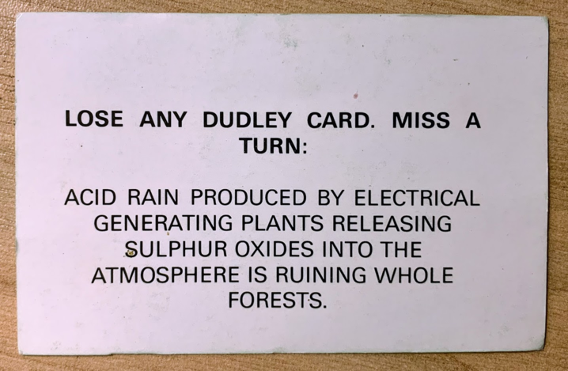
See above re: "what happened to acid rain?". I went looking for an example of a forest ruined by acid rain, and I learned about the Black Triangle (distinct from the Polygon, which had an unspecified number of sides). The Black Triangle is a famously polluted region in the borderlands between Germany, Poland and Czechia. Up until 1989, the area was characterised by heavy industry powered by locally-strip-mined brown coal (the worst coal), as well as uranium mining, and concomitant environmental devastation and impact on human life. Allegedly since the dissolution of the USSR there has been an attempt to restore the area. However, the Turów Coal Mine (a large open pit lignite mine in this area) just got its licence renewed until 2026 (if not longer), so it's not clear how seriously everyone is taking this idea. On the upside, there are campaigns to stop this dreadful mine.
An aside about brown coal: also known as lignite, this is some terrible-quality coal. It's got a relatively low carbon content, high moisture content, and high ash content. I'm not a coal scientist (although I may be by the time I finish this post), but all signs point to low quality product. Its heat content is low enough that you have to burn a lot to get any useful power out of it, it's hard to transport, and it's really bad for people. Lignite was also used extensively in East Germany for energy sovereingty, and Germany to this day remains its largest producer.
Musical interlude about (children) working in coal mines: School Day's Over - Luke Kelly.
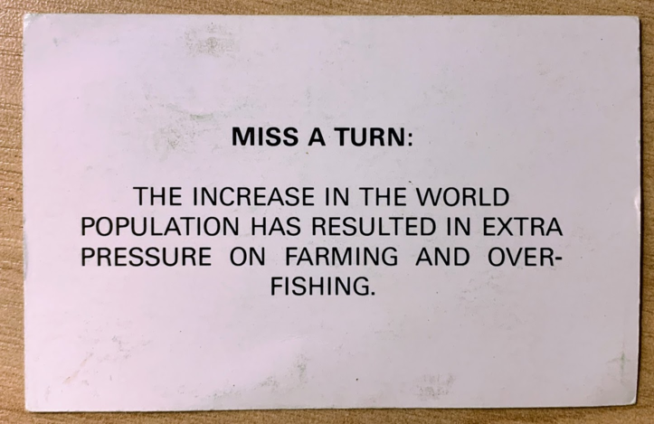
The earth's population has risen by ~2.5 billion since 1989, now standing at around 7.7 billion. The rate of growth seemingly peaked in 1963 at 2.1%, and has been decreasing somewhat since then, now currently around 1%. Forecasts indicate that we might settle out at around 11 billion people by 2100, assuming things don't deteriorate rapidly (thunderdome-style) over the next century. There are many things to be said about population growth in the context of environmentalism, and I've started just linking to this article when it comes up. It's not not an issue, but it's also not the main issue, and making it the focal point has a way of getting kinda racist real fast.
"The problem is extreme inequality, the excessive consumption of the world’s ultra-rich, and a system that prioritises profits over social and ecological well-being. This is where where we should be devoting our attention".
This isn't to say that farming and fishing haven't been under pressure. Looking just at meat: between 1989 and 2018, global meat production went from 172.8 to 341.2 million tonnes per year. This includes 69 billion chickens, 1.5 billion pigs, and 300 million cows per year. This ~100% increase is disproportionate to the population increase (~50%). A lot of this is driven by China going from a country with relatively low meat consumption per capita to something approaching European countries. China's consumption was ~22kg/person/year in 1989, and was ~61kg/person/year in 2017. Compare this to the UK which went from ~72kg/person/year to ~80kg/person/year over the same period. Surprising to me, the US has a much higher per-capita meat consumption than the UK, at ~124kg/person/year in 2017. I'm happy to report that Ireland's meat consumption has decreased since I was born, from ~86kg/person/year to ~79kg/person/year. While it's easy to blame China for its increasing meat-lust, considering per-capita consumption is important for remembering who the real villains are: Australians.
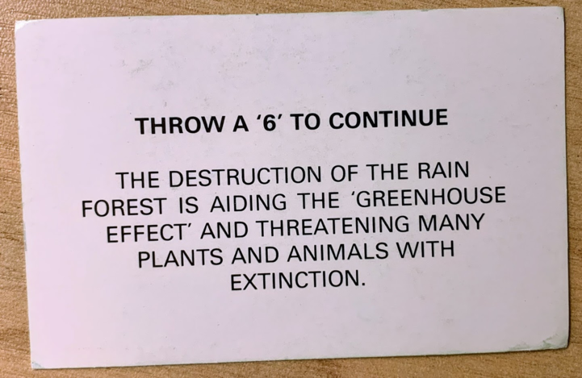
and
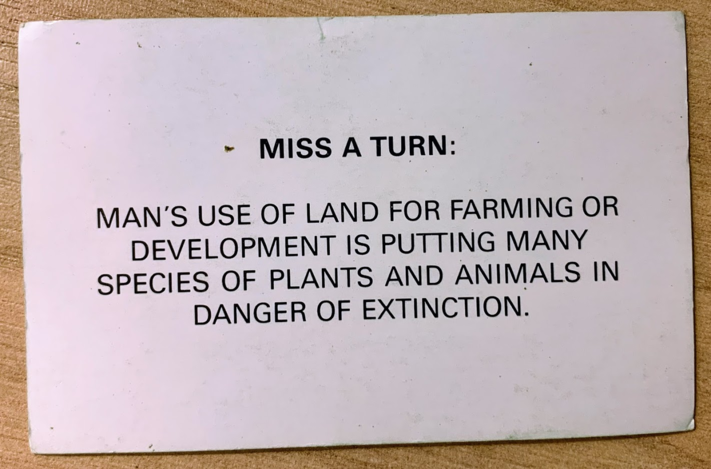
These go together because, as I mentioned already, agriculture (specifically cattle) is the leading cause of deforestation.
Extinction is hard for me, so I put this last. I don't know how to deal with the fact that hedgehogs are now at risk of extinction in Britain alongside water voles and red squirrels. I don't want to read about how a quarter of known bee species have not been sighted since 1990, or how melting glaciers are driving Alpine plants to extinction.
I distantly accept that extinction is a normal part of ecology and a necessary part of evolution. If nothing went extinct, the world would be teeming with goo or something (I don't know I'm not a biologist, leave me alone). But I still approach the thought of the dodo and the thylacine with a sense of grief. I look at the last photos of the thylacine as the last remaining fragments of a world we can never return to. Extinction to me, like death, is bound up with "never again". A door closing forever, a flame going out, something lost not to be found. Perhaps it is some immature refusal to accept the finiteness of life, a desire to run from endings and the loss of potential futures. I feel it when I think about an ancient forest being felled (you can't just grow that back!), or the (likely) loss of coral reefs, or the destruction of ancient cities and art, sacred sites, the loss of endangered languages. It is so much easier to destroy than to create. And humans are so, so good at destroying. The current rate of extinction is estimated to be 100-1000 times the "normal background" rate. We've built incredible technology to dredge the oceans and raze forests, to replace diversity with monoculture, to try to control nature, as if we were not ourselves part of it.
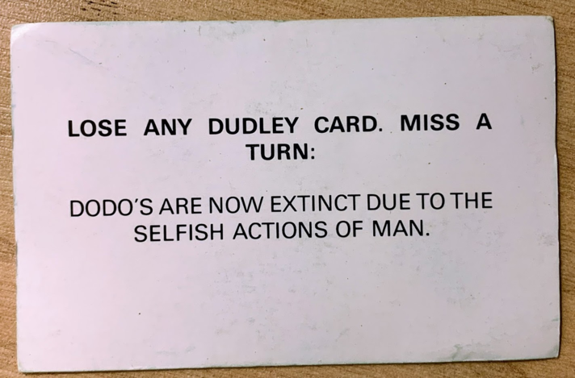
Gee, I wonder how I ended up like this.
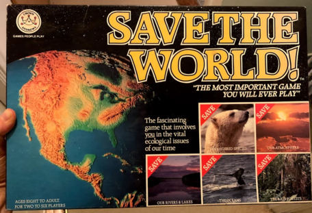
And now for a message of hope:
Hopelessness is not an option. In the words of Rebel Steps:
Believe in yourself, trust one another, and get organised.
Good luck!